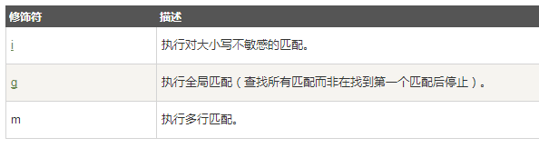
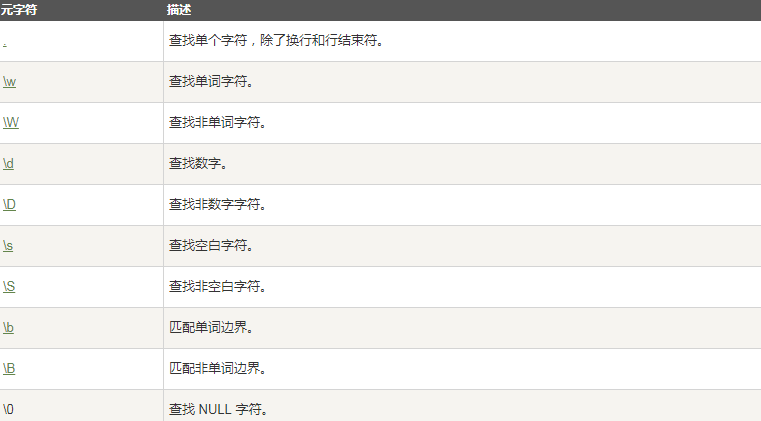
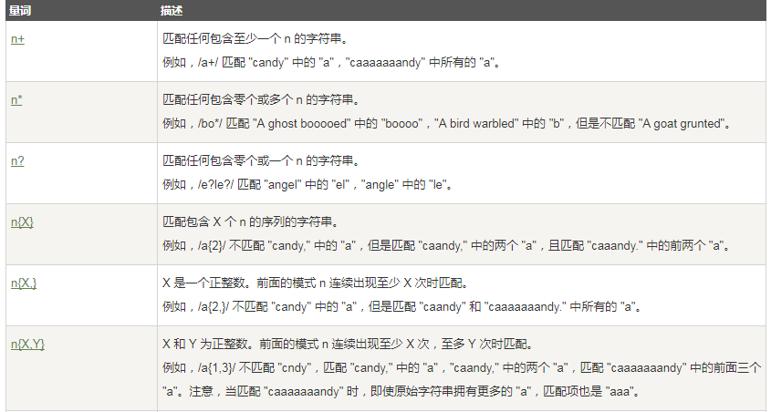
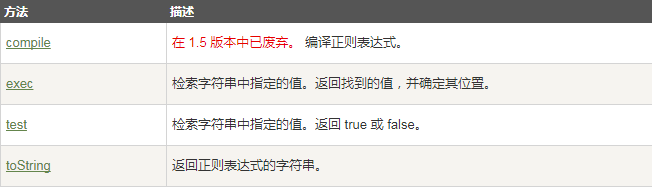
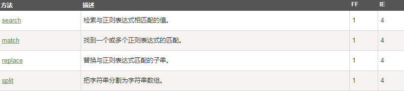
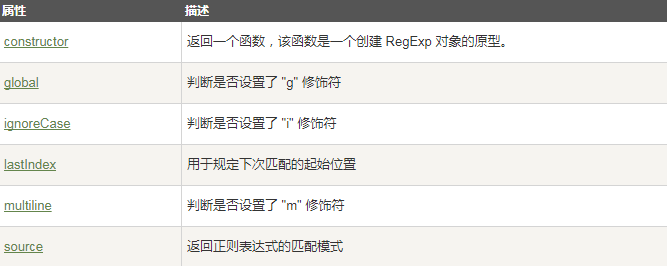

正则表达式
小课堂【深圳-WEB-C组】
分享人：李榕涛
目录
1.背景介绍
2.知识剖析
3.常见问题
4.解决方案
5.编码实战
6.扩展思考
7.参考文献
8.更多讨论
1.背景介绍
字符串是编程时涉及到的最多的一种数据结构，对字符串进行操作的需求几乎无处不在。比如判断一个字符串是否是合法的Email地址，虽然可以编程提取 @ 前后的子串，再分别判断是否是单词和域名，但这样做不但麻烦，而且代码难以复用。
正则表达式是一种用来匹配字符串的强有力的武器。它的设计思想是用一种描述性的语言来给字符串定义一个规则，凡是符合规则的字符串，我们就认为它“匹配”了，否则，该字符串就是不合法的。
2.知识剖析
如何写正则表达式
第一种使用字面量形式来定义正则表达式
var reg = /[bc]at/i;
第二种是用RegExp构造函数
var reg = new RegExp("[bc]at","i");
修饰符
修饰符用于执行区分大小写和全局匹配
方括号
方括号用于查找某个范围内的字符

元字符
元字符（Metacharacter）是拥有特殊含义的字符
量词
RegExp 对象方法
支持正则表达式的 String 对象的方法
RegExp 对象属性
3.常见问题
如何用正则匹配全部
4.解决方案
他自己和他自己的补集 就可以匹配全部了
5.编码实战
6.扩展思考
7.参考文献
参考二：廖雪峰
参考三：CSDN
8.更多讨论
鸣谢
感谢大家观看
By 李榕涛